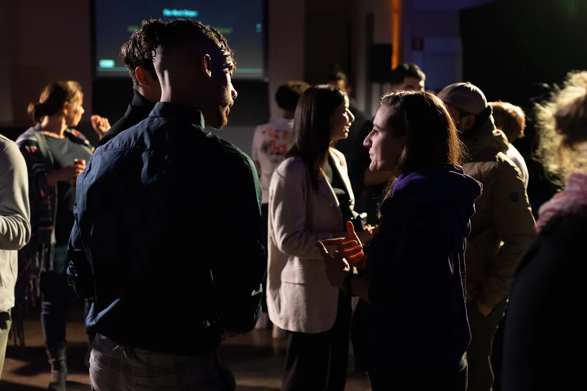

Etten-Leur in the picture
Het begon met een vraag: waarom trekt jong talent weg uit Etten-Leur? We maakten er een documentaire over en presenteerden die tijdens een groot evenement met een panel. Daarna gingen we met een grote groep aan tafel om te brainstormen.
Uit die gesprekken ontstond SOLID Collective. Het bewijs dat deze aanpak werkt, en de manier waarop we elk project sindsdien opzetten.